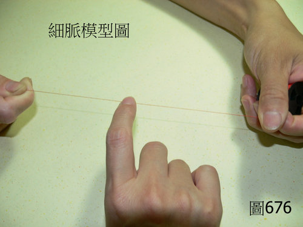

脈理醫理學 33.18：細脈
作者：陳建元
說明：
脈的型態一條直然、窄細如線者，可以定義為「細脈」，如〈圖676〉。

本質和病機：
細脈的本質和病機，依其所在的脈位而有所不同，如果「細脈」是出現在第1層、或第2層、或第1、2層脈位的時候，其本質和病機可以為「外感風寒兼氣（陽）血（陰）不足」，或只是單純的「氣（陽）血（陰）不足而偏血（陰）不足」。如果「細脈」是出現在第3層、或第4層、或第3、4層脈位的時候，其本質和病機可以為「氣滯兼氣（陽）血（陰）不足」，或只是單純的「氣（陽）血（陰）不足而偏氣（陽）不足」，或是「寒實積滯」。
所以基本上細脈的主病機會比較雜：
在脈位第1～2層的時候：主「外感風寒兼氣（陽）血（陰）不足」；主「氣（陽）血（陰）不足而偏血（陰）不足」。
在脈位第3～4層的時候：主「氣滯兼氣（陽）血（陰）不足」；主「氣（陽）血（陰）不足而偏氣（陽）不足」；主「寒實積滯」。
所以遇到細脈的時候，還要再去比對病態與外候，譬如患者有沒有外感的體徵表現？有沒有氣滯疼痛的體徵表現？有沒有寒實疼痛臉色發青的體徵表現？舌唇有沒有氣（陽）虛或血（陰）不足的表現？把脈證兩相對照之後，才能判定真正的病機是什麼？
兼脈：
細脈只要兼浮兼軟之後，就等於是「濡脈」，所以細脈宜和第 33.20 條 濡脈參看。兼澀是夾瘀。兼滑是夾痰。兼黏是夾毒。兼數是夾熱。兼遲是夾寒。
六部細脈、治療藥物：
◎右寸第1～2層細脈（風寒外感）：
為咳嗽、為鼻塞、為惡寒；治用麻黃、荊芥之類的藥物。
◎右寸第3～4層細脈（肺脈氣滯）：
為胸悶、為胸痛；治用佛手、陳皮之類的藥物。
◎右寸細脈（陰陽氣血諸虛）：
為短氣、為胸悶、為呼吸不暢；治用歸入肺脈的各類補益藥物。
◎右關第1～2層細脈（風寒外感）：
為腹痛腹悶、為或吐或瀉；治用紫蘇、藿香之類的藥物。
◎右關第3～4層細脈（脾脈氣滯）：
為腹悶、為腹痛、為腹瀉；治用陳皮、烏藥、枳殼之類的藥物。
◎右關細脈（陰陽氣血諸虛）：
為腹悶、為腹痛、為消化不良；治用歸入脾脈的各類補益藥物。
◎右尺第1～2層細脈（風寒外感）：
為筋骨酸痛、為便秘、為腹瀉、為下腹痛；治用細辛、桂枝、獨活之類的藥物。
◎右尺第3～4層細脈（腎陽脈氣滯）：
為下腹痛、為便秘、為水腫，治用烏藥、木香、薤白、大腹皮之類的藥物。
◎右尺脈細脈（陰陽氣血諸虛）：
為腰酸背痛、為便秘、為大腸瀉、為容易手冷足冰、為水腫、為頭暈、為目澀目昏；治用歸入腎陽脈的各類補益藥物。
◎左寸第1～2層細脈（風寒外感）：
為頭痛、為項背几几、為胸悶；治用桂枝之類的藥物。
◎左寸第3～4層細脈（心脈氣滯）：
為胸悶、為胸痛；治用川芎、川楝子之類的藥物。
◎左寸細脈（陰陽氣血諸虛）：
為短氣、為胸悶、為呼吸不暢、為健忘、為失眠；治用歸入心脈的各類補益藥物。
◎左關第1～2層細脈（風寒外感）：
為頭痛、為頭暈、為眼睛發霧、為眼屎較多；治用荊芥、防風之類的藥物。
◎左關第3～4層細脈（肝脈氣滯）：
為脇痛、為脇脹、為容易發怒；治用柴胡、青皮、川楝子之類的藥物。
◎左關細脈（陰陽氣血諸虛）：
為肝虛目暗、為目澀、為妥瑞氏症、為頭暈、為容易發怒；治用歸入肝脈的各類補益藥物。
◎左尺第1～2層細脈（風寒外感）：
為筋骨酸痛、為小便淋澀、為小便痛、為下腹痛；治用桂枝、麻黃、藁本之類的藥物。
◎左尺第3～4層細脈（腎陰脈氣滯）：
為下腹痛、為小便淋澀、為水腫；治用烏藥、川楝子、大腹皮之類的藥物。
◎左尺脈細脈（陰陽氣血諸虛）：
為腰酸背痛、為小便淋澀、為水腫、為頭暈、為目澀目昏；治用歸入腎陰脈的各類補益藥物。
細脈若是在各脈部的3～4層， 而表現為「寒實積滯」的時候，在肺脈上其病態可見到胸部冷痛不舒、悠悠而痛，治宜溫散，宜用乾薑、桂枝、花椒、紅花之類的藥物；在脾脈上其病態可見到腹部冷痛不舒、悠悠而痛，治宜溫散，宜用乾薑、高良薑、製附子、丁香、延胡索之類的藥物；在尺脈其病態可見到下腹部冷痛不舒、悠悠而痛，治宜溫散，宜用製附子、乾薑、雞血藤之類的藥物；在心脈上其病態可見到胸部冷痛不舒、悠悠而痛，治宜溫散，宜用乾薑、桂枝、乳香、製附子之類的藥物；在肝脈上其病態可見到脇部冷痛不舒、悠悠而痛，治宜溫散，宜用吳茱萸、小茴香、肉桂、延胡索之類的藥物。
參看：
本條要和第 33.20 條 濡脈、第 33.9 條 弦脈、第 33.10 條 緊脈互相參看。
【引用請先來信告知徵求同意，若有涉及販售營利等商業行為，版權所有拷貝盜用必究。】
【藥王脈學講壇】http://blog.xuite.net/drjychen/twblog